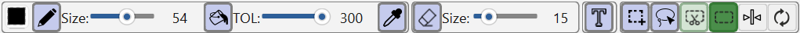
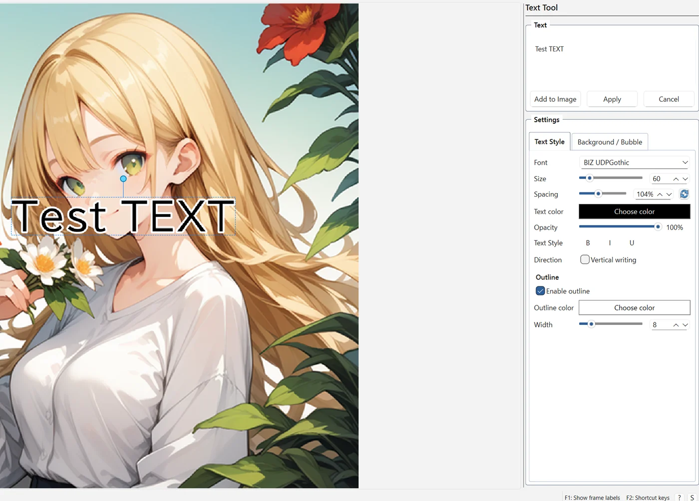
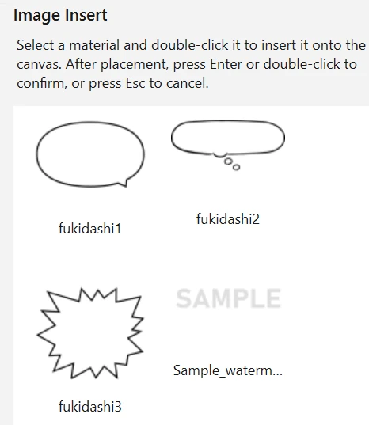
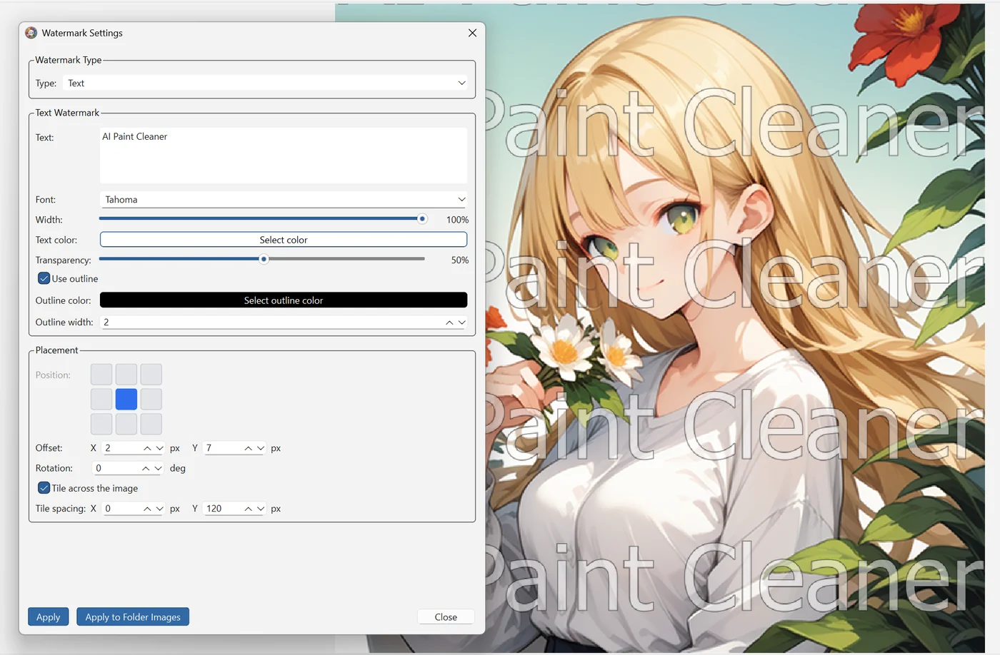

Paint, text & selection
Covers basic editing: simple drawing, adding text, and selecting an area to move, crop or transform.
Toolbar

123456789101112131415
| 1Color palette | Color used by the pen, fill, solid mosaic and color replacement. |
| 2Pen | Left-drag to draw. |
| 3Pen size | Also changeable with right click + wheel. |
| 4Fill | Fills the area of the same color where you left-click. |
| 5Tolerance | 0 fills only the exact color; higher values include similar colors (right click + wheel). |
| 6Eyedropper | Picks the color where you click. |
| 7Eraser | Erases the traced area. |
| 8Eraser size | Also changeable with right click + wheel. |
| 9Text | Configure in the right sidebar, then click to place text. |
| 10Rectangle select | Select a rectangle (Enter / double-click to confirm). |
| 11Free select | Select a traced shape (Enter / double-click to confirm). |
| 12Move | Cuts the selection and moves it. |
| 13Copy | Duplicates the selection and moves it. |
| 14Selection processing | Crop, background processing, delete / expand strips (see below). |
| 15Transform | Flip horizontal / vertical, rotate 90° left / right. |
Selection processing
| Menu | Description | Key |
|---|---|---|
| Crop | Crops the image to the selection. | |
| Background processing for selection | Processes only the selection with the current background removal settings. | |
| Delete vertical | Removes the selection vertically and joins the left and right sides. | Ctrl+Alt+V |
| Delete horizontal | Removes the selection horizontally and joins the top and bottom. | Ctrl+Alt+H |
| Expand vertical | Inserts a vertical strip to increase the image width. | Ctrl+Shift+V |
| Expand horizontal | Inserts a horizontal strip to increase the image height. | Ctrl+Shift+H |
| Copy / paste / cut | Ctrl+C / Ctrl+V / Ctrl+X |
Text

123456789101112| 1Text on canvas | Left click to place. Drag to move; use the round handle above to rotate. |
| 2Text | The text to add. Line breaks are allowed. |
| 3Add to Image | Places the text in the center of the image. |
| 4Apply | Confirms the placement (right click / Enter also work). |
| 5Cancel | Cancels the placement (Esc). |
| 6Text Style | Tab for font, color and other settings. |
| 7Background / Bubble | Tab for text background and speech bubbles: shape (rectangle, rounded, ellipse, soft ellipse, burst, thought / cloud), tail, background color, border and padding. |
| 8Font / size / spacing | Spacing 100% is standard; the button on the right resets it. |
| 9Text color / opacity | |
| 10Text style | Bold (B), italic (I), underline (U). |
| 11Direction | Check for vertical writing. |
| 12Outline | Outline on / off, color and width. |
Until you apply, you can change everything in the right sidebar as often as you like.
Image insert

| 1Choose an asset | Images placed in the app's image folder are listed in the sidebar. |
| 2Insert | Double-click to place it on the canvas. |
| 3Confirm | Enter or double-click to confirm, Esc to cancel. |
Putting frequently used assets such as speech bubbles and watermark logos in the image folder is handy.
Watermark

1234567891011121314| 1Type | Text / image. Images are chosen from the image folder. |
| 2Text | The watermark text. |
| 3Font | |
| 4Width | Width of the whole watermark relative to the image width. |
| 5Text color | |
| 6Transparency | 0% is fully visible, 100% fully transparent. |
| 7Outline | Outline on / off, color and width. |
| 8Position | Choose from 9 positions. |
| 9Offset | Shift from the position (px). |
| 10Rotation | Angle (deg). |
| 11Tile | Tiles the watermark across the image, with adjustable spacing. |
| 12Apply | Applies to the current image. |
| 13Apply to Folder Images | Applies to every image in the same folder. |
| 14Close |
Settings are previewed on the canvas, so you can adjust while you watch.